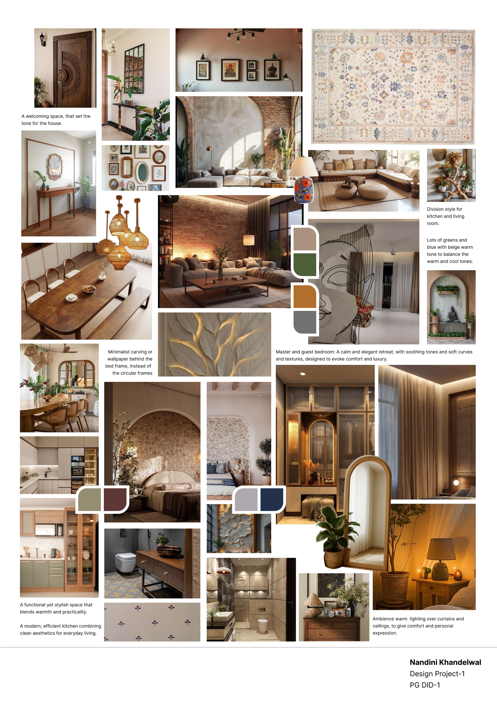
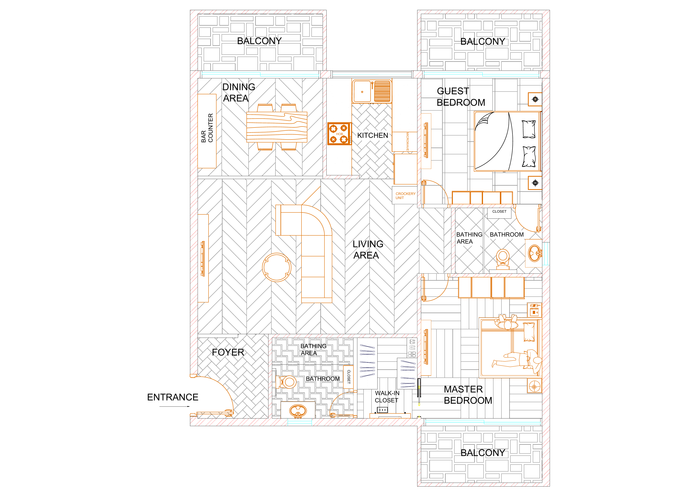

Project 01Residential interior / Academic2026
One complete residential case study
2 BHK
Residential Home
A college-assigned residential concept developed from material direction and spatial planning through technical drawings and rendered room studies.
Material & atmosphere
From plan
to presence.
The project brings together planning, elevations, material studies and rendered direction to imagine a refined two-bedroom home with a calm, contemporary character.
Project 01 / Moodboard
02 / Material direction
A visual language
in balance.
A warm, layered direction for the same 2 BHK residential concept - balancing natural textures, crafted details and softly lit spaces.

Project 01 / Technical drawings
Drawings
meet space.
Choose a drawing and swipe through the supplied AutoCAD views.
